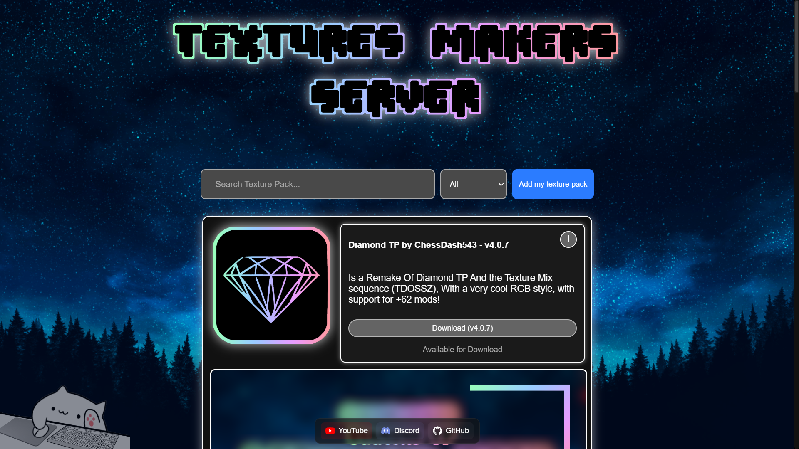
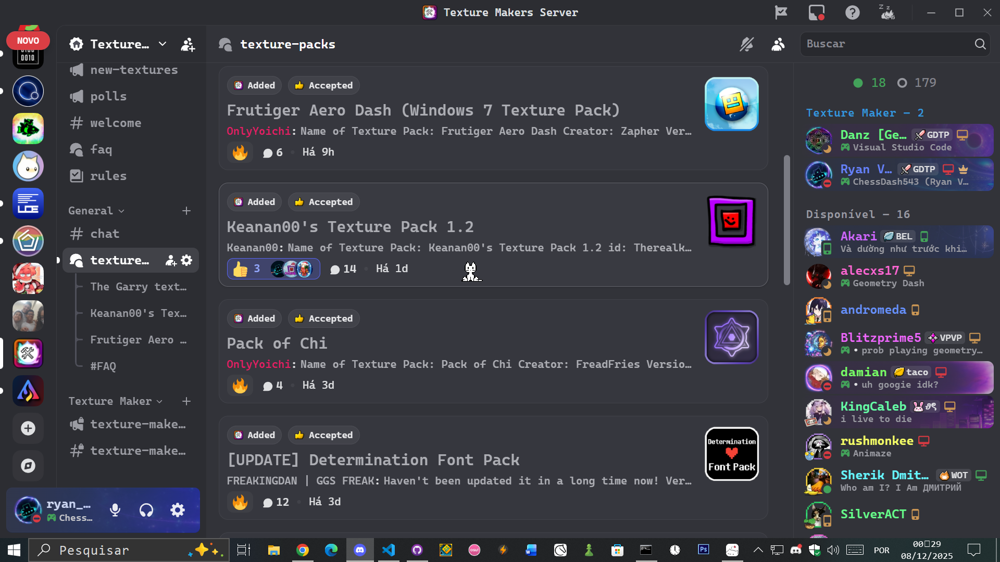

Texture Makers Server - TMS
Texture Makers Servers is a small community of Texture Pack Creators that allows them more freedom to post and share their texture packs on this site.
Texture PacksTexture Pack Statistics

If you want to add your texture pack, join our Discord server and make your request.
Discord